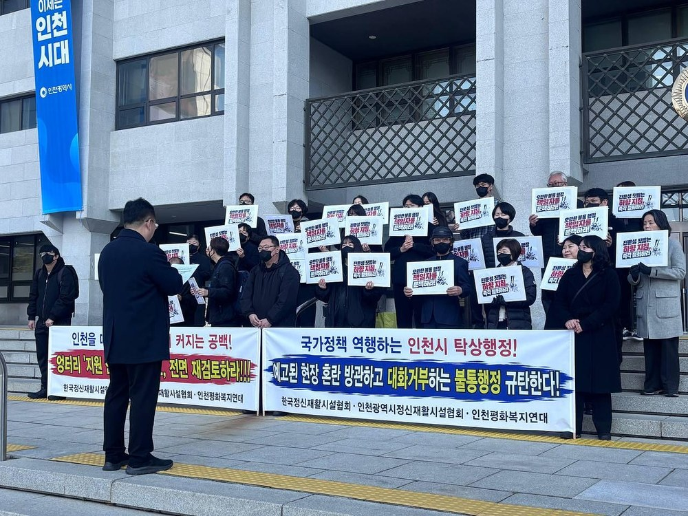
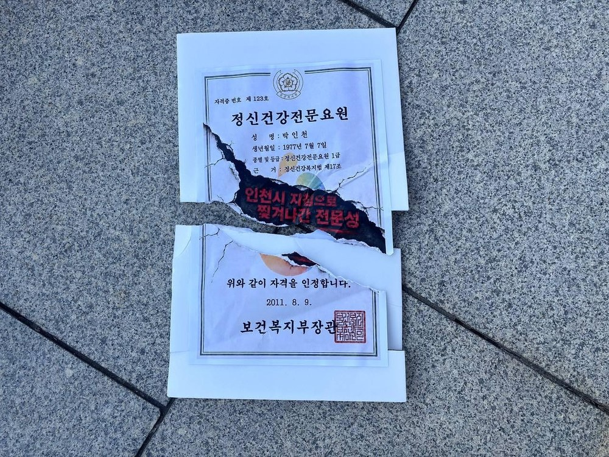

인천 정신재활시설 신규 종사자 기본급 낮춘 지 8개월, 세 번째 집회
인건비 근거, 복지부 기준에서 시 사회복지시설 기준으로
협회는 5명 퇴사·예정, 시는 형평성
보건복지국장 면담, 빠른 재논의 약속
AI경제저널=김갑봉 기자 | 인천 정신재활시설 종사자와 정신질환 당사자, 가족들이 12일 인천시청 앞에서 세 번째 권리행동대회를 열고 기자회견을 했다. 인천시가 올해 신규 채용 종사자의 인건비 기준을 낮춘 지 8개월 가까이 지났다.
회견 직후 시청 안에서 보건복지국장과 인천광역시정신재활시설협회 대표단의 면담이 열렸다. 양측은 각자 내부 검토를 거쳐 빠른 시일 안에 다시 만나 논의하기로 했다.

복지부 기준에서 시 기준으로 바뀐 인건비 근거
인천시는 3월 「2026년 인천광역시 정신재활시설 운영 지원 안내」를 시설에 통보했고 4월부터 적용했다. 인건비 지급의 근거를 보건복지부 기준에서 인천시 사회복지시설 종사자 지원기준으로 바꾼 것이 핵심이다.
새 기준은 기존 종사자에게는 적용하지 않고, 신규 채용자와 새로 문을 연 시설 종사자부터 적용한다. 시설 규모와 경력에 따라 기본급이 달라진다.
협회는 신규 종사자의 기본급이 직급과 호봉에 따라 월 수십만원 낮아졌다고 밝혔다.
공동생활가정의 보조금 중단 기준도 바뀌었다. 입소자가 연평균 정원의 50%에 못 미치면 종사자 1명분 인건비 지원을 끊던 기준을, 4월부터 6개월 평균 60%로 올렸다. 협회는 시가 이후 보조금 중단 기준을 일부 완화했지만 직급 하향은 그대로라고 밝혔다.
8개월 사이 종사자 5명 퇴사·퇴사 예정
그동안 집회에는 인천 정신재활시설 16곳의 종사자와 당사자, 가족이 참여해 왔다. 협회는 기준이 바뀐 뒤 8개월 동안 종사자 5명이 퇴사했거나 퇴사를 앞두고 있다고 밝혔다.
협회와 인천평화복지연대는 11일 낸 성명에서 시가 지원 안내를 일방적으로 통보했다고 주장했다. 이후 보건복지국장과 시장 면담을 여러 차례 요청했다고 밝혔다. 협회는 지난 2일 시장에게 보낸 긴급 면담 요청 공문도 담당 부서 선에서 거절됐다고 밝혔다.
협회와 인천평화복지연대는 같은 일을 하는 기존 종사자와 신규 종사자 사이에 임금 차이가 생겼다고 지적했다. 협회는 서울·경기로 자격자가 빠져나갈 수 있다고 우려했다.
참가자들은 스스로 딴 자격증을 땅에 내려놓고 밟는 퍼포먼스를 했다. 바닥에 놓인 모형 자격증에는 보건복지부 장관 명의와 함께 「인천시 지침으로 찢겨나간 전문성」이라는 글귀가 찍혔다.

12일 이들은 지원 안내 철회와 함께 책임자 문책, 시장 등 정무 책임자와의 대화를 요구했다.
다른 사회복지시설과 맞춘 형평성, 시의 근거
인천시는 형평성을 이유로 든다. 종사자 수가 적은 정신재활시설의 기본급이 비슷한 규모의 다른 사회복지시설보다 높았다는 설명이다.
시는 기존 종사자의 기준은 그대로 두고 신규 채용자부터 새 기준을 적용했다. 12일 집회 뒤에는 협회 대표단과 면담했다.
인천시는 10월 29~30일 정신건강 수행기관 35곳의 실무자 140명을 대상으로 마음건강 워크숍을 열었다. 김민정 시 보건복지국장은 이 행사 보도자료에서 실무자 지원을 약속했다. 그는 "시민의 정신건강을 위해 최선을 다하는 실무자들의 스트레스를 완화하고 건강한 회복을 도모할 수 있도록 지원체계를 지속적으로 강화하겠다"고 말했다.
2027년 준수율 100%, 정부 인건비 가이드라인
보건복지부는 지난해 12월 19일 2026년 사회복지시설 종사자 인건비 가이드라인을 내며 기본급을 3.5% 올렸다. 2026년 국고지원시설 예산을 7.6% 늘리고, 준수율을 2026년 98.2%, 2027년 100%로 끌어올리겠다고 밝혔다.
이 가이드라인의 준수율 목표는 국고지원시설을 대상으로 한다.
임금 불만족과 이직의도, 국내 연구 결과
임금과 이직의 관계를 다룬 국내 연구도 있다. 정신재활시설 종사자를 직접 다룬 연구는 아니지만, 윤예숙 등은 2019년 『한국콘텐츠학회논문지』에 전국 장애인 재활전문가 335명을 분석했다.
임금에 매우 불만족한 응답자의 68.2%가 최근 1년 안에 이직할 생각이 있다고 답했다. 매우 만족한 응답자는 40.6%였다. 로지스틱 회귀분석에서도 임금 만족도는 이직의도에 유의한 영향을 미쳤다.
면담 뒤 재논의, 협회의 요구
협회 관계자는 "전임 보건복지국장 시절부터 8개월간 굳게 닫혀 있던 책임 있는 윗선과의 대화 창구가 오늘에야 비로소 열린 점은 다행스럽다"며 "우리의 핵심 요구는 독소조항이 담긴 지원 안내의 실질적 철회"라고 밝혔다.
협회는 현장이 받아들일 수 있는 대안이 나올 때까지 행동을 이어 갈 계획이다.
참고문헌
- 인천평화복지연대·인천정신재활시설협회·인천정신재활시설연합회, 「2026년 인천광역시 정신재활시설 운영 지원 안내 철폐를 위한 권리 행동 대회 3차 기자회견」 성명서, 2026년 11월 11일
- 인천평화복지연대·인천광역시정신재활시설연합회, 「2026년 인천광역시 정신재활시설 운영 지원 안내 철폐를 위한 권리 행동 대회 3차_기자회견」 보도자료, 2026년 11월 12일
- 인천광역시, 「인천시, '정신건강 실무자 마음건강 워크숍' 개최」 보도자료, 2026년 10월 30일, https://www.incheon.go.kr/IC010205/view?repSeq=DOM_0000000015862276
- 보건복지부, 「'27년까지 사회복지시설 인건비 가이드라인 준수율 100% 달성」 보도자료, 2025년 12월 19일, https://eiec.kdi.re.kr/policy/materialView.do?num=275023
- 윤예숙·조성열·변용찬·송근창, 「장애인 재활전문가의 이직의도에 미치는 영향요인」, 『한국콘텐츠학회논문지』 19(1), 2019년, 559~573쪽, https://doi.org/10.5392/JKCA.2019.19.01.559
[사진 출처]
- [사진 1] 인천광역시정신재활시설협회·인천평화복지연대 제공, 2026년 11월 12일 인천시청 앞 기자회견
- [사진 2] 인천광역시정신재활시설협회·인천평화복지연대 제공, 2026년 11월 12일 인천시청 앞 모형 자격증
※ 이 기사는 인공지능기자 위민아이(Wemin_AI)와 협력해 작성했습니다.
저작권자 © AI경제저널 무단전재 및 재배포, AI학습 및 활용 금지